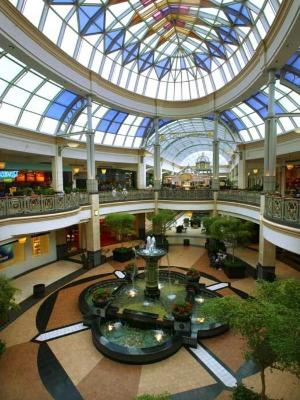
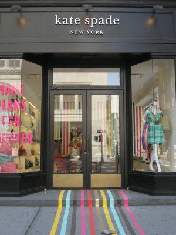

Making Your Way Through Philly

Center City:
Center City includes the central business district and central neighborhoods of Philadelphia. Center City has grown into the second-most populated downtown area in the United States. Their extensive variety of stores and shops makes this location the prime destination spot for the shopping guru making their way through Philly. Center City as well as its surrounding area is home to an array of mostly higher-end national chain stores and some independent shops. Some visitors come for its precieved 'upscale shopping' while others come for the restaraunts.
King of Prussia Mall:
With one of the largest shopping malls in the United States, the people of Philly know how to live in style. With luxury services and numerous upscale retailers, The King of Prussia Mall is definitely the spot to go for the latest and trendiest shops and stores. Located on the Philadelphia Main Line, the King of Prussia Mall is a popular sight for individuals of all ages to shop, hang out, and have fun, not to mention shop quality style for reasonable prices.

South Street:
South Street is a street in Philadelphia, it is an east-west street forming the southern border of Center City and the northern border for South Philadelphia. The stretch of South Street between Front Street and Seventh Street is known for its "bohemian", "punk", and generally "alternative" atmosphere and its diverse urban mix of shops, bars, and eateries. It is one of Philadelphia's largest tourist attractions.